2024 Higher Chemistry - Paper 2 marking instructions
Source: Scottish Qualifications Authority (SQA) / Qualifications Scotland. This is a StemInteract HTML companion, not an official HTML edition. Selectable text is supplied alongside original page images. Use the images or original PDF for equations, powers, fractions, vector notation, tables and diagrams; text extraction cannot fully preserve mathematical layout.
Jump to a question
PDF page 1
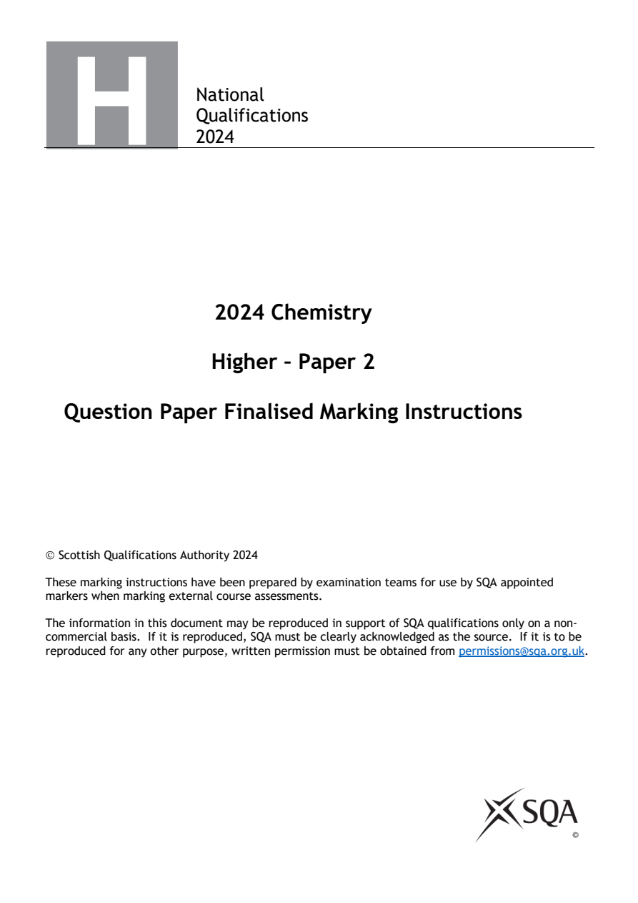
Selectable page text
National
Qualifications
2024
2024 Chemistry
Higher – Paper 2
Question Paper Finalised Marking Instructions
Scottish Qualifications Authority 2024
These marking instructions have been prepared by examination teams for use by SQA appointed
markers when marking external course assessments.
The information in this document may be reproduced in support of SQA qualifications only on a non-
commercial basis. If it is reproduced, SQA must be clearly acknowledged as the source. If it is to be
reproduced for any other purpose, written permission must be obtained from permissions@sqa.org.uk.PDF page 2
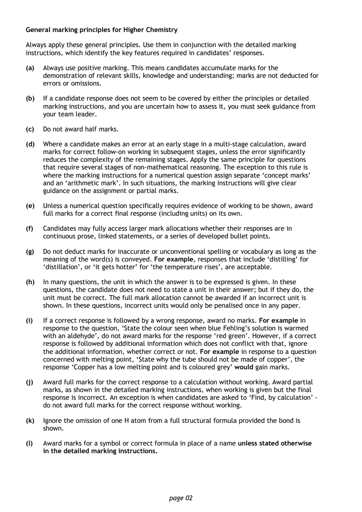
Selectable page text
General marking principles for Higher Chemistry
Always apply these general principles. Use them in conjunction with the detailed marking
instructions, which identify the key features required in candidates’ responses.
(a) Always use positive marking. This means candidates accumulate marks for the
demonstration of relevant skills, knowledge and understanding; marks are not deducted for
errors or omissions.
(b) If a candidate response does not seem to be covered by either the principles or detailed
marking instructions, and you are uncertain how to assess it, you must seek guidance from
your team leader.
(c) Do not award half marks.
(d) Where a candidate makes an error at an early stage in a multi-stage calculation, award
marks for correct follow-on working in subsequent stages, unless the error significantly
reduces the complexity of the remaining stages. Apply the same principle for questions
that require several stages of non-mathematical reasoning. The exception to this rule is
where the marking instructions for a numerical question assign separate ‘concept marks’
and an ‘arithmetic mark’. In such situations, the marking instructions will give clear
guidance on the assignment or partial marks.
(e) Unless a numerical question specifically requires evidence of working to be shown, award
full marks for a correct final response (including units) on its own.
(f) Candidates may fully access larger mark allocations whether their responses are in
continuous prose, linked statements, or a series of developed bullet points.
(g) Do not deduct marks for inaccurate or unconventional spelling or vocabulary as long as the
meaning of the word(s) is conveyed. For example, responses that include ‘distilling’ for
‘distillation’, or ‘it gets hotter’ for ‘the temperature rises’, are acceptable.
(h) In many questions, the unit in which the answer is to be expressed is given. In these
questions, the candidate does not need to state a unit in their answer; but if they do, the
unit must be correct. The full mark allocation cannot be awarded if an incorrect unit is
shown. In these questions, incorrect units would only be penalised once in any paper.
(i) If a correct response is followed by a wrong response, award no marks. For example in
response to the question, ‘State the colour seen when blue Fehling’s solution is warmed
with an aldehyde’, do not award marks for the response ‘red green’. However, if a correct
response is followed by additional information which does not conflict with that, ignore
the additional information, whether correct or not. For example in response to a question
concerned with melting point, ‘State why the tube should not be made of copper’, the
response ‘Copper has a low melting point and is coloured grey’ would gain marks.
(j) Award full marks for the correct response to a calculation without working. Award partial
marks, as shown in the detailed marking instructions, when working is given but the final
response is incorrect. An exception is when candidates are asked to ‘Find, by calculation’ -
do not award full marks for the correct response without working.
(k) Ignore the omission of one H atom from a full structural formula provided the bond is
shown.
(l) Award marks for a symbol or correct formula in place of a name unless stated otherwise
in the detailed marking instructions.
page 02PDF page 3
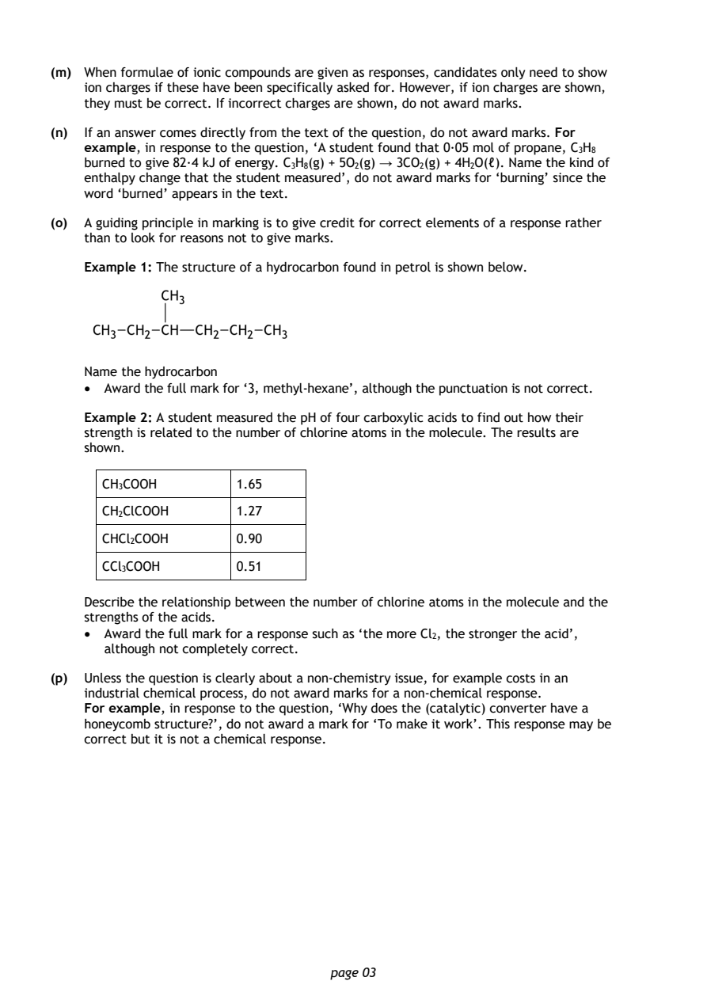
Selectable page text
(m) When formulae of ionic compounds are given as responses, candidates only need to show
ion charges if these have been specifically asked for. However, if ion charges are shown,
they must be correct. If incorrect charges are shown, do not award marks.
(n) If an answer comes directly from the text of the question, do not award marks. For
example, in response to the question, ‘A student found that 0·05 mol of propane, C₃H₈
burned to give 82·4 kJ of energy. C₃H₈(g) + 5O₂(g) → 3CO₂(g) + 4H₂O(ℓ). Name the kind of
enthalpy change that the student measured’, do not award marks for ‘burning’ since the
word ‘burned’ appears in the text.
(o) A guiding principle in marking is to give credit for correct elements of a response rather
than to look for reasons not to give marks.
Example 1: The structure of a hydrocarbon found in petrol is shown below.
Name the hydrocarbon
• Award the full mark for ‘3, methyl-hexane’, although the punctuation is not correct.
Example 2: A student measured the pH of four carboxylic acids to find out how their
strength is related to the number of chlorine atoms in the molecule. The results are
shown.
CH₃COOH 1.65
CH₂ClCOOH 1.27
CHCl₂COOH 0.90
CCl₃COOH 0.51
Describe the relationship between the number of chlorine atoms in the molecule and the
strengths of the acids.
• Award the full mark for a response such as ‘the more Cl₂, the stronger the acid’,
although not completely correct.
(p) Unless the question is clearly about a non-chemistry issue, for example costs in an
industrial chemical process, do not award marks for a non-chemical response.
For example, in response to the question, ‘Why does the (catalytic) converter have a
honeycomb structure?’, do not award a mark for ‘To make it work’. This response may be
correct but it is not a chemical response.
page 03PDF page 4
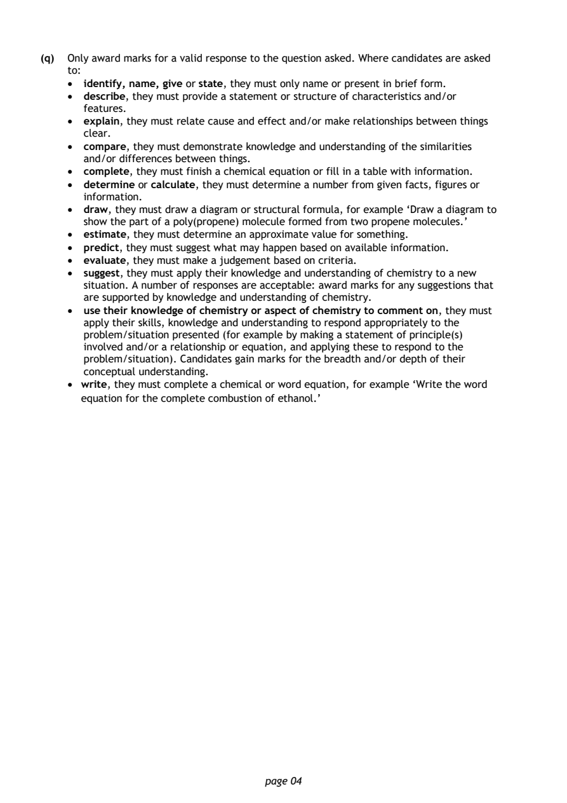
Selectable page text
(q) Only award marks for a valid response to the question asked. Where candidates are asked
to:
• identify, name, give or state, they must only name or present in brief form.
• describe, they must provide a statement or structure of characteristics and/or
features.
• explain, they must relate cause and effect and/or make relationships between things
clear.
• compare, they must demonstrate knowledge and understanding of the similarities
and/or differences between things.
• complete, they must finish a chemical equation or fill in a table with information.
• determine or calculate, they must determine a number from given facts, figures or
information.
• draw, they must draw a diagram or structural formula, for example ‘Draw a diagram to
show the part of a poly(propene) molecule formed from two propene molecules.’
• estimate, they must determine an approximate value for something.
• predict, they must suggest what may happen based on available information.
• evaluate, they must make a judgement based on criteria.
• suggest, they must apply their knowledge and understanding of chemistry to a new
situation. A number of responses are acceptable: award marks for any suggestions that
are supported by knowledge and understanding of chemistry.
• use their knowledge of chemistry or aspect of chemistry to comment on, they must
apply their skills, knowledge and understanding to respond appropriately to the
problem/situation presented (for example by making a statement of principle(s)
involved and/or a relationship or equation, and applying these to respond to the
problem/situation). Candidates gain marks for the breadth and/or depth of their
conceptual understanding.
• write, they must complete a chemical or word equation, for example ‘Write the word
equation for the complete combustion of ethanol.’
page 04PDF page 5
Paper 2, Question 1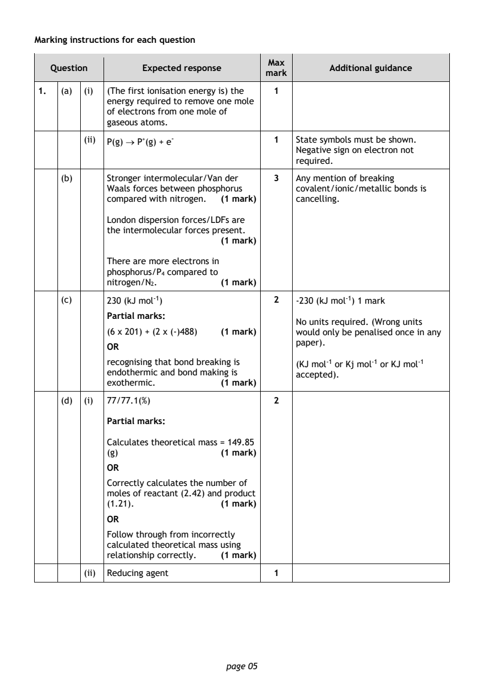
Selectable page text
Marking instructions for each question
Max
Question Expected response Additional guidance
mark
1. (a) (i) (The first ionisation energy is) the 1
energy required to remove one mole
of electrons from one mole of
gaseous atoms.
(ii) P(g) → P⁺(g) + e⁻ 1 State symbols must be shown.
Negative sign on electron not
required.
(b) Stronger intermolecular/Van der 3 Any mention of breaking
Waals forces between phosphorus covalent/ionic/metallic bonds is
compared with nitrogen. (1 mark) cancelling.
London dispersion forces/LDFs are
the intermolecular forces present.
(1 mark)
There are more electrons in
phosphorus/P₄ compared to
nitrogen/N₂. (1 mark)
(c) 230 (kJ mol⁻¹) 2 -230 (kJ mol⁻¹) 1 mark
Partial marks:
No units required. (Wrong units
(6 x 201) + (2 x (-)488) (1 mark) would only be penalised once in any
paper).
OR
recognising that bond breaking is (KJ mol⁻¹ or Kj mol⁻¹ or KJ mol⁻¹
endothermic and bond making is accepted).
exothermic. (1 mark)
(d) (i) 77/77.1(%) 2
Partial marks:
Calculates theoretical mass = 149.85
(g) (1 mark)
OR
Correctly calculates the number of
moles of reactant (2.42) and product
(1.21). (1 mark)
OR
Follow through from incorrectly
calculated theoretical mass using
relationship correctly. (1 mark)
(ii) Reducing agent 1
page 05PDF page 6
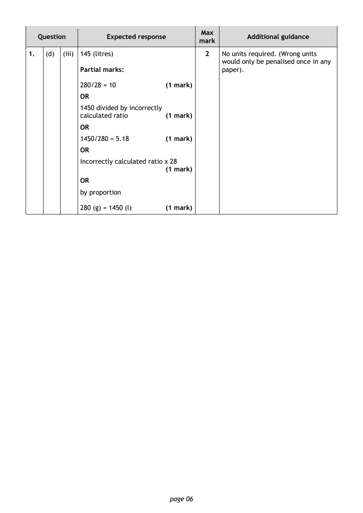
Selectable page text
Max
Question Expected response Additional guidance
mark
1. (d) (iii) 145 (litres) 2 No units required. (Wrong units
would only be penalised once in any
Partial marks: paper).
280/28 = 10 (1 mark)
OR
1450 divided by incorrectly
calculated ratio (1 mark)
OR
1450/280 = 5.18 (1 mark)
OR
Incorrectly calculated ratio x 28
(1 mark)
OR
by proportion
280 (g) = 1450 (l) (1 mark)
page 06PDF page 7
Paper 2, Question 2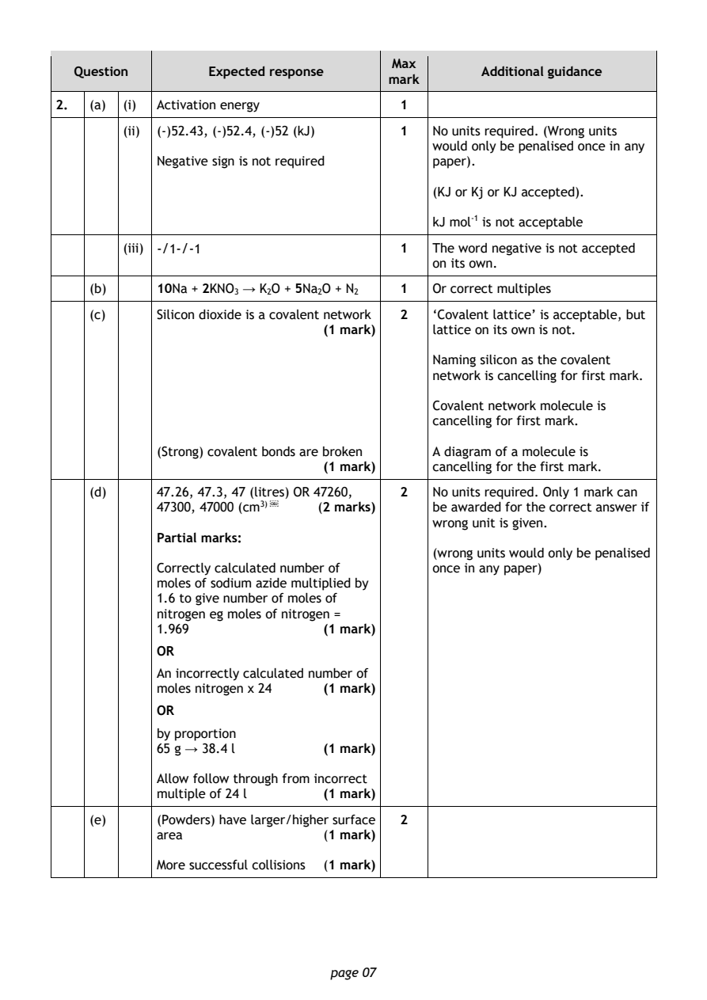
Selectable page text
Max
Question Expected response Additional guidance
mark
2. (a) (i) Activation energy 1
(ii) (-)52.43, (-)52.4, (-)52 (kJ) 1 No units required. (Wrong units
would only be penalised once in any
Negative sign is not required paper).
(KJ or Kj or KJ accepted).
kJ mol⁻¹ is not acceptable
(iii) -/1-/-1 1 The word negative is not accepted
on its own.
(b) 10Na + 2KNO₃ → K₂O + 5Na₂O + N₂ 1 Or correct multiples
(c) Silicon dioxide is a covalent network 2 ‘Covalent lattice’ is acceptable, but
(1 mark) lattice on its own is not.
Naming silicon as the covalent
network is cancelling for first mark.
Covalent network molecule is
cancelling for first mark.
(Strong) covalent bonds are broken A diagram of a molecule is
(1 mark) cancelling for the first mark.
(d) 47.26, 47.3, 47 (litres) OR 47260, 2 No units required. Only 1 mark can
47300, 47000 (cm³⁾ ^{} (2 marks) be awarded for the correct answer if
wrong unit is given.
Partial marks:
(wrong units would only be penalised
Correctly calculated number of once in any paper)
moles of sodium azide multiplied by
1.6 to give number of moles of
nitrogen eg moles of nitrogen =
1.969 (1 mark)
OR
An incorrectly calculated number of
moles nitrogen x 24 (1 mark)
OR
by proportion
65 g → 38.4 l (1 mark)
Allow follow through from incorrect
multiple of 24 l (1 mark)
(e) (Powders) have larger/higher surface 2
area (1 mark)
More successful collisions (1 mark)
page 07PDF page 8
Paper 2, Question 3Selectable page text
Max
Question Expected response Additional guidance
mark
3. Award 1 mark where the candidate 3
has demonstrated, at an appropriate
level, a limited understanding of the
chemistry involved. They have made
some statement(s) which are
relevant to the situation, showing
that they have understood at least a
little of the chemistry within the
problem.
Award 2 marks where the candidate
has demonstrated, at an appropriate
level, a reasonable understanding of
the chemistry involved. They make
some statement(s) which are
relevant to the situation, showing
that they have understood the
problem.
Award 3 marks where the candidate
has demonstrated, at an appropriate
level, a good understanding of the
chemistry involved. They show a
good comprehension of the
chemistry of the situation and
provide a logically correct answer to
the question posed. This type of
response might include a statement
of the principles involved, a
relationship or an equation, and the
application of these to respond to
the problem. The answer does not
need to be ‘excellent’ or ‘complete’
for the candidate to gain full marks.
Award 0 marks where the candidate
has not demonstrated, at an
appropriate level, an understanding
of the chemistry involved. There is
no evidence that they have
recognised the area of chemistry
involved, or they have not given any
statement of a relevant chemistry
principle. Award this mark also if the
candidate merely restates the
chemistry given in the question.
page 08PDF page 9
Paper 2, Question 4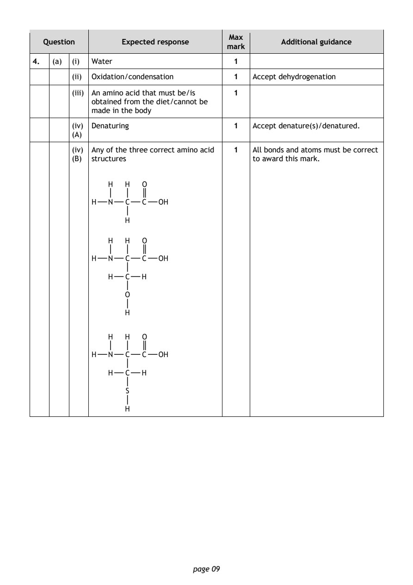
Selectable page text
Max
Question Expected response Additional guidance
mark
4. (a) (i) Water 1
(ii) Oxidation/condensation 1 Accept dehydrogenation
(iii) An amino acid that must be/is 1
obtained from the diet/cannot be
made in the body
(iv) Denaturing 1 Accept denature(s)/denatured.
(A)
(iv) Any of the three correct amino acid 1 All bonds and atoms must be correct
(B) structures to award this mark.
page 09PDF page 10
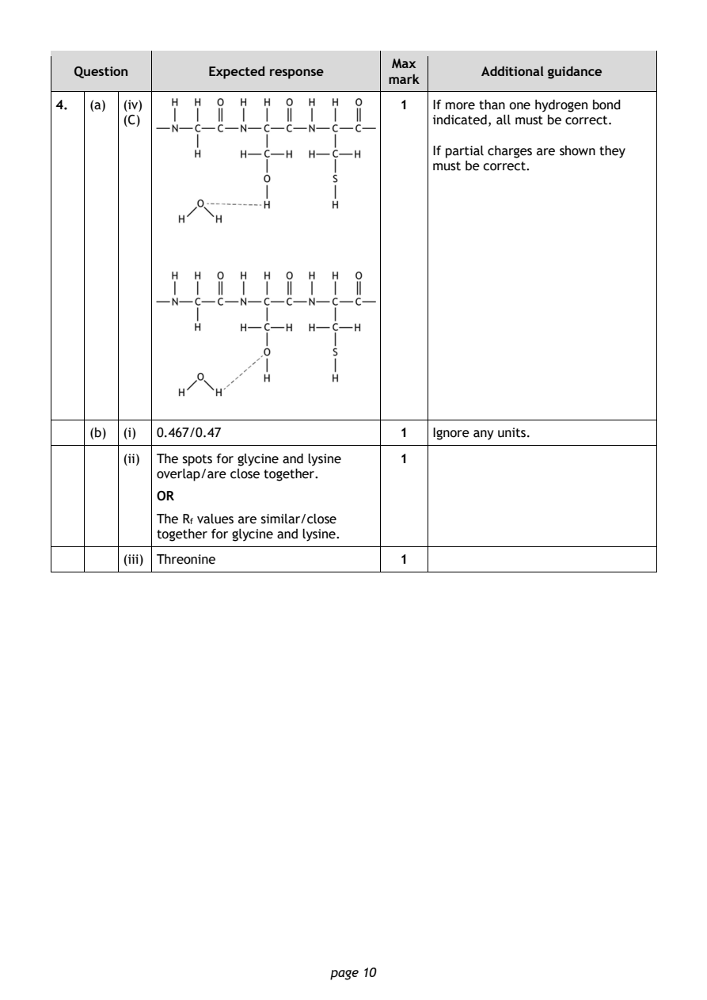
Selectable page text
Max
Question Expected response Additional guidance
mark
4. (a) (iv) 1 If more than one hydrogen bond
(C) indicated, all must be correct.
If partial charges are shown they
must be correct.
(b) (i) 0.467/0.47 1 Ignore any units.
(ii) The spots for glycine and lysine 1
overlap/are close together.
OR
The R values are similar/close
togeth^{f}er for glycine and lysine.
(iii) Threonine 1
page 10PDF page 11
Paper 2, Question 5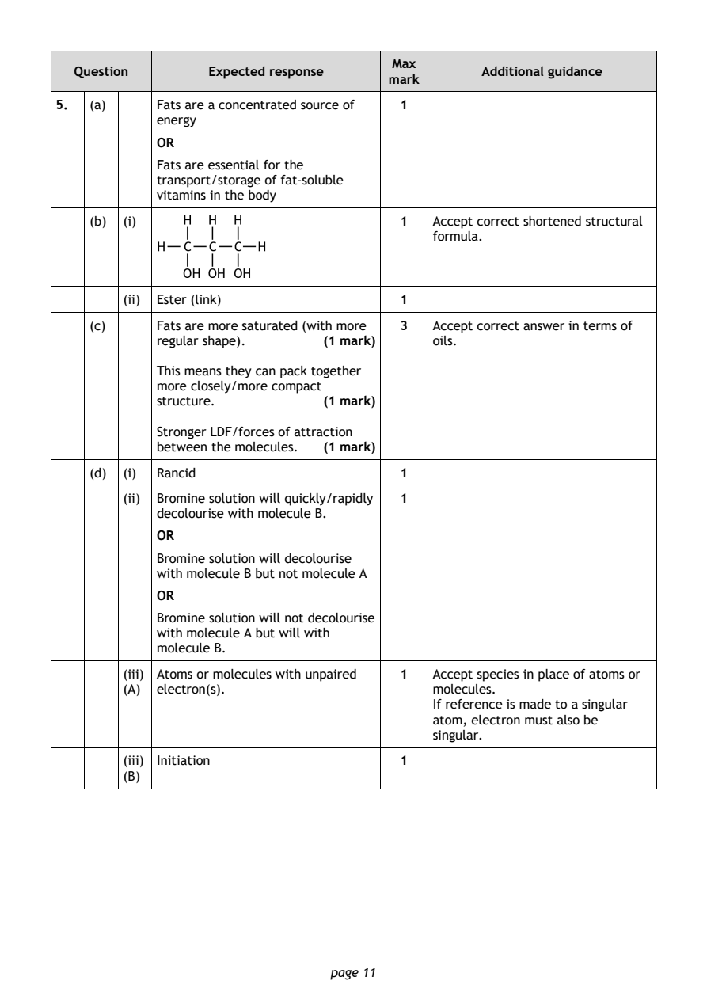
Selectable page text
Max
Question Expected response Additional guidance
mark
5. (a) Fats are a concentrated source of 1
energy
OR
Fats are essential for the
transport/storage of fat-soluble
vitamins in the body
(b) (i) 1 Accept correct shortened structural
formula.
(ii) Ester (link) 1
(c) Fats are more saturated (with more 3 Accept correct answer in terms of
regular shape). (1 mark) oils.
This means they can pack together
more closely/more compact
structure. (1 mark)
Stronger LDF/forces of attraction
between the molecules. (1 mark)
(d) (i) Rancid 1
(ii) Bromine solution will quickly/rapidly 1
decolourise with molecule B.
OR
Bromine solution will decolourise
with molecule B but not molecule A
OR
Bromine solution will not decolourise
with molecule A but will with
molecule B.
(iii) Atoms or molecules with unpaired 1 Accept species in place of atoms or
(A) electron(s). molecules.
If reference is made to a singular
atom, electron must also be
singular.
(iii) Initiation 1
(B)
page 11PDF page 12
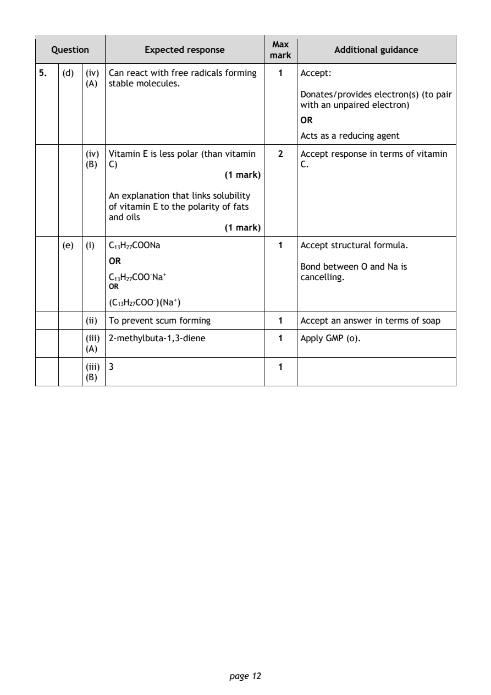
Selectable page text
Max
Question Expected response Additional guidance
mark
5. (d) (iv) Can react with free radicals forming 1 Accept:
(A) stable molecules.
Donates/provides electron(s) (to pair
with an unpaired electron)
OR
Acts as a reducing agent
(iv) Vitamin E is less polar (than vitamin 2 Accept response in terms of vitamin
(B) C) C.
(1 mark)
An explanation that links solubility
of vitamin E to the polarity of fats
and oils
(1 mark)
(e) (i) C₁ H₂ COONa 1 Accept structural formula.
3 7
OR
Bond between O and Na is
C₁ H₂ COO⁻Na⁺ cancelling.
3 7
OR
(C₁ H₂ COO⁻)(Na⁺)
3 7
(ii) To prevent scum forming 1 Accept an answer in terms of soap
(iii) 2-methylbuta-1,3-diene 1 Apply GMP (o).
(A)
(iii) 3 1
(B)
page 12PDF page 13
Paper 2, Question 6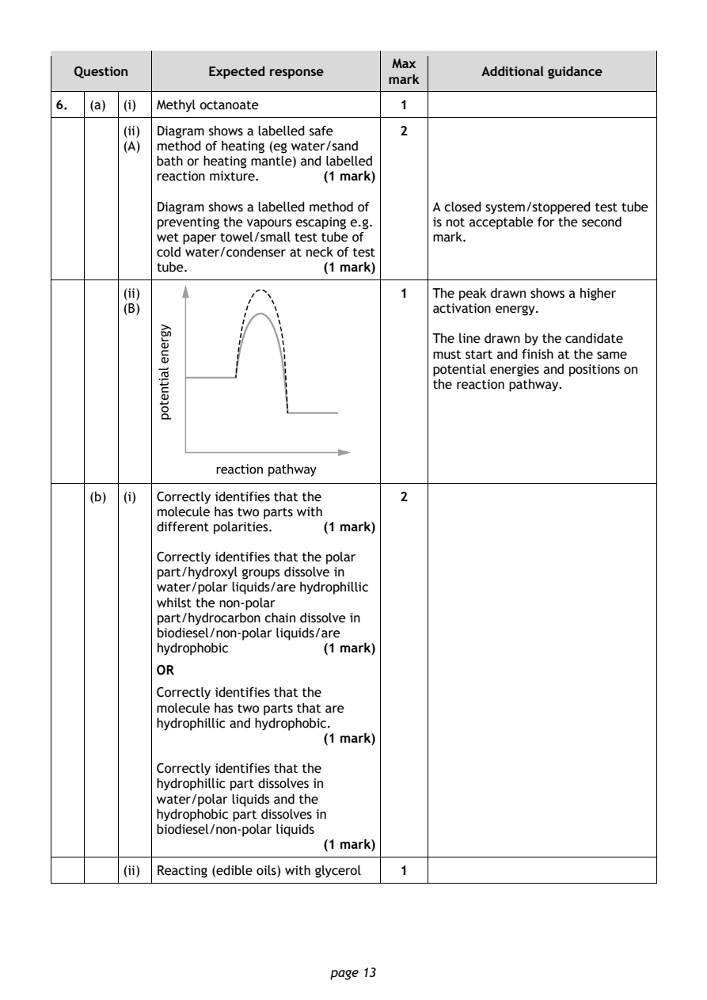
Selectable page text
Max
Question Expected response Additional guidance
mark
6. (a) (i) Methyl octanoate 1
(ii) Diagram shows a labelled safe 2
(A) method of heating (eg water/sand
bath or heating mantle) and labelled
reaction mixture. (1 mark)
Diagram shows a labelled method of A closed system/stoppered test tube
preventing the vapours escaping e.g. is not acceptable for the second
wet paper towel/small test tube of mark.
cold water/condenser at neck of test
tube. (1 mark)
(ii) 1 The peak drawn shows a higher
(B) activation energy.
The line drawn by the candidate
must start and finish at the same
potential energies and positions on
the reaction pathway.
(b) (i) Correctly identifies that the 2
molecule has two parts with
different polarities. (1 mark)
Correctly identifies that the polar
part/hydroxyl groups dissolve in
water/polar liquids/are hydrophillic
whilst the non-polar
part/hydrocarbon chain dissolve in
biodiesel/non-polar liquids/are
hydrophobic (1 mark)
OR
Correctly identifies that the
molecule has two parts that are
hydrophillic and hydrophobic.
(1 mark)
Correctly identifies that the
hydrophillic part dissolves in
water/polar liquids and the
hydrophobic part dissolves in
biodiesel/non-polar liquids
(1 mark)
(ii) Reacting (edible oils) with glycerol 1
page 13PDF page 14
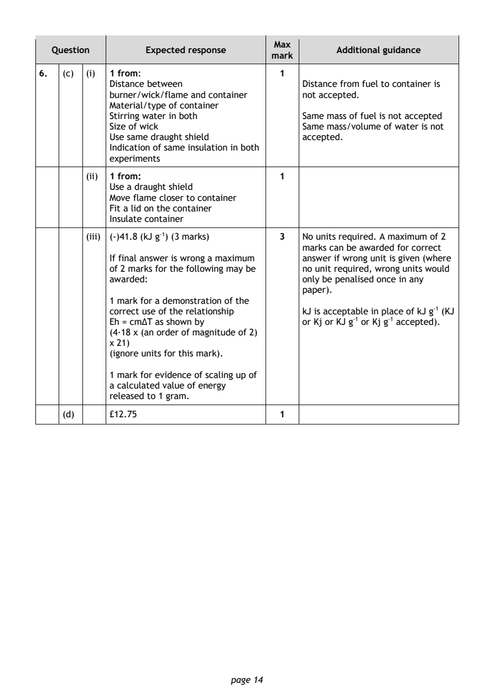
Selectable page text
Max
Question Expected response Additional guidance
mark
6. (c) (i) 1 from: 1
Distance between Distance from fuel to container is
burner/wick/flame and container not accepted.
Material/type of container
Stirring water in both Same mass of fuel is not accepted
Size of wick Same mass/volume of water is not
Use same draught shield accepted.
Indication of same insulation in both
experiments
(ii) 1 from: 1
Use a draught shield
Move flame closer to container
Fit a lid on the container
Insulate container
(iii) (-)41.8 (kJ g⁻¹) (3 marks) 3 No units required. A maximum of 2
marks can be awarded for correct
If final answer is wrong a maximum answer if wrong unit is given (where
of 2 marks for the following may be no unit required, wrong units would
awarded: only be penalised once in any
paper).
1 mark for a demonstration of the
correct use of the relationship kJ is acceptable in place of kJ g⁻¹ (KJ
Eh = cmΔT as shown by or Kj or KJ g⁻¹ or Kj g⁻¹ accepted).
(4∙18 x (an order of magnitude of 2)
x 21)
(ignore units for this mark).
1 mark for evidence of scaling up of
a calculated value of energy
released to 1 gram.
(d) £12.75 1
page 14PDF page 15
Paper 2, Question 7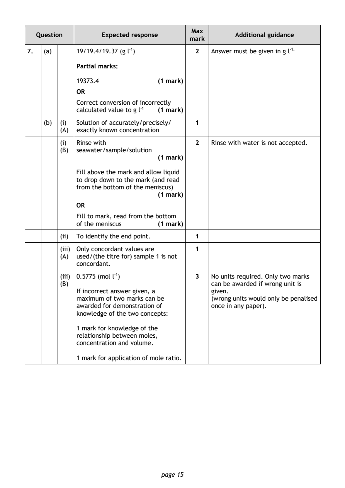
Selectable page text
Max
Question Expected response Additional guidance
mark
7. (a) 19/19.4/19.37 (g l⁻¹) 2 Answer must be given in g l⁻¹^{.}
Partial marks:
19373.4 (1 mark)
OR
Correct conversion of incorrectly
calculated value to g l⁻¹ (1 mark)
(b) (i) Solution of accurately/precisely/ 1
(A) exactly known concentration
(i) Rinse with 2 Rinse with water is not accepted.
(B) seawater/sample/solution
(1 mark)
Fill above the mark and allow liquid
to drop down to the mark (and read
from the bottom of the meniscus)
(1 mark)
OR
Fill to mark, read from the bottom
of the meniscus (1 mark)
(ii) To identify the end point. 1
(iii) Only concordant values are 1
(A) used/(the titre for) sample 1 is not
concordant.
(iii) 0.5775 (mol l⁻¹) 3 No units required. Only two marks
(B) can be awarded if wrong unit is
If incorrect answer given, a given.
maximum of two marks can be (wrong units would only be penalised
awarded for demonstration of once in any paper).
knowledge of the two concepts:
1 mark for knowledge of the
relationship between moles,
concentration and volume.
1 mark for application of mole ratio.
page 15PDF page 16
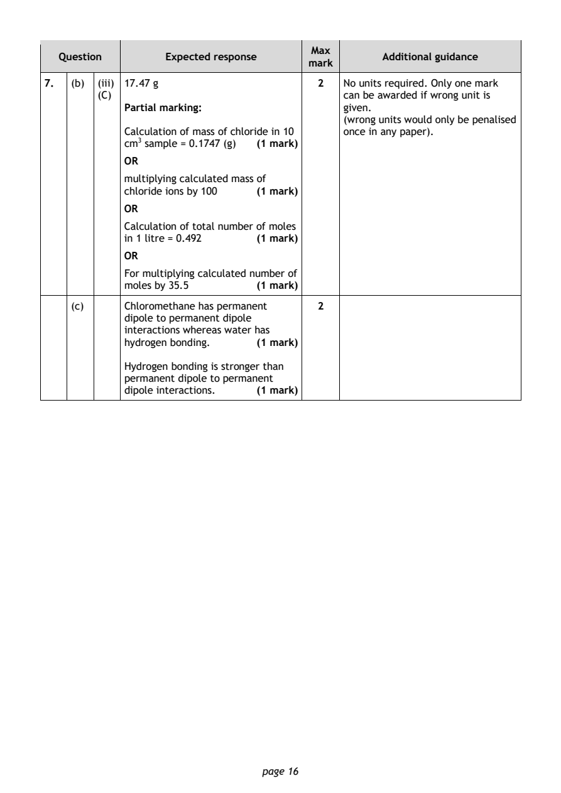
Selectable page text
Max
Question Expected response Additional guidance
mark
7. (b) (iii) 17.47 g 2 No units required. Only one mark
(C) can be awarded if wrong unit is
Partial marking: given.
(wrong units would only be penalised
Calculation of mass of chloride in 10 once in any paper).
cm³ sample = 0.1747 (g) (1 mark)
OR
multiplying calculated mass of
chloride ions by 100 (1 mark)
OR
Calculation of total number of moles
in 1 litre = 0.492 (1 mark)
OR
For multiplying calculated number of
moles by 35.5 (1 mark)
(c) Chloromethane has permanent 2
dipole to permanent dipole
interactions whereas water has
hydrogen bonding. (1 mark)
Hydrogen bonding is stronger than
permanent dipole to permanent
dipole interactions. (1 mark)
page 16PDF page 17
Paper 2, Question 8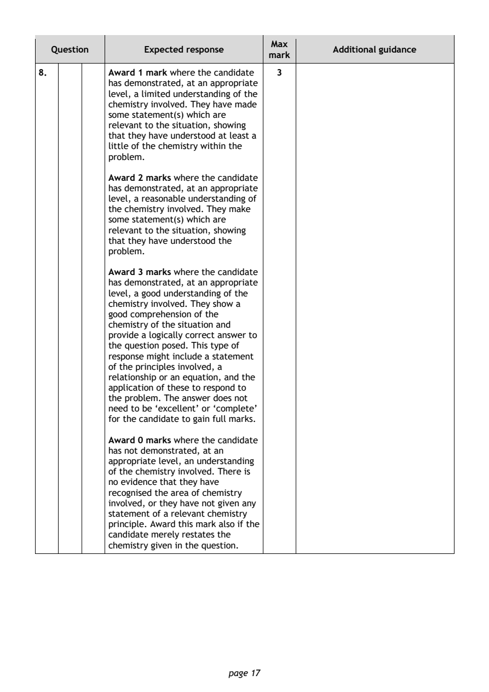
Selectable page text
Max
Question Expected response Additional guidance
mark
8. Award 1 mark where the candidate 3
has demonstrated, at an appropriate
level, a limited understanding of the
chemistry involved. They have made
some statement(s) which are
relevant to the situation, showing
that they have understood at least a
little of the chemistry within the
problem.
Award 2 marks where the candidate
has demonstrated, at an appropriate
level, a reasonable understanding of
the chemistry involved. They make
some statement(s) which are
relevant to the situation, showing
that they have understood the
problem.
Award 3 marks where the candidate
has demonstrated, at an appropriate
level, a good understanding of the
chemistry involved. They show a
good comprehension of the
chemistry of the situation and
provide a logically correct answer to
the question posed. This type of
response might include a statement
of the principles involved, a
relationship or an equation, and the
application of these to respond to
the problem. The answer does not
need to be ‘excellent’ or ‘complete’
for the candidate to gain full marks.
Award 0 marks where the candidate
has not demonstrated, at an
appropriate level, an understanding
of the chemistry involved. There is
no evidence that they have
recognised the area of chemistry
involved, or they have not given any
statement of a relevant chemistry
principle. Award this mark also if the
candidate merely restates the
chemistry given in the question.
page 17PDF page 18
Paper 2, Question 9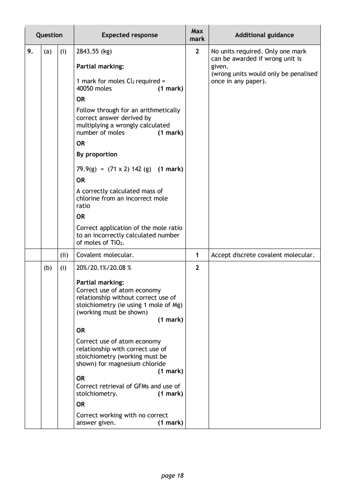
Selectable page text
Max
Question Expected response Additional guidance
mark
9. (a) (i) 2843.55 (kg) 2 No units required. Only one mark
can be awarded if wrong unit is
Partial marking: given.
(wrong units would only be penalised
1 mark for moles Cl₂required = once in any paper).
40050 moles (1 mark)
OR
Follow through for an arithmetically
correct answer derived by
multiplying a wrongly calculated
number of moles (1 mark)
OR
By proportion
79.9(g) = (71 x 2) 142 (g) (1 mark)
OR
A correctly calculated mass of
chlorine from an incorrect mole
ratio
OR
Correct application of the mole ratio
to an incorrectly calculated number
of moles of TiO₂.
(ii) Covalent molecular. 1 Accept discrete covalent molecular.
(b) (i) 20%/20.1%/20.08 % 2
Partial marking:
Correct use of atom economy
relationship without correct use of
stoichiometry (ie using 1 mole of Mg)
(working must be shown)
(1 mark)
OR
Correct use of atom economy
relationship with correct use of
stoichiometry (working must be
shown) for magnesium chloride
(1 mark)
OR
Correct retrieval of GFMs and use of
stoichiometry. (1 mark)
OR
Correct working with no correct
answer given. (1 mark)
page 18PDF page 19
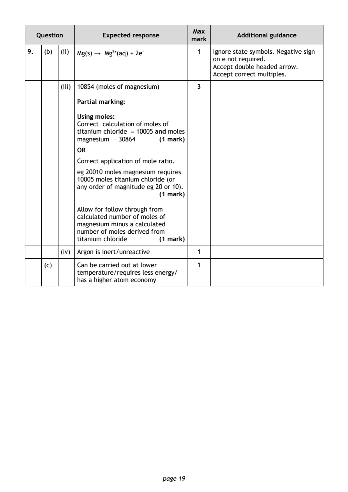
Selectable page text
Max
Question Expected response Additional guidance
mark
9. (b) (ii) Mg(s) → Mg²⁺(aq) + 2e⁻ 1 Ignore state symbols. Negative sign
on e not required.
Accept double headed arrow.
Accept correct multiples.
(iii) 10854 (moles of magnesium) 3
Partial marking:
Using moles:
Correct calculation of moles of
titanium chloride = 10005 and moles
magnesium = 30864 (1 mark)
OR
Correct application of mole ratio.
eg 20010 moles magnesium requires
10005 moles titanium chloride (or
any order of magnitude eg 20 or 10).
(1 mark)
Allow for follow through from
calculated number of moles of
magnesium minus a calculated
number of moles derived from
titanium chloride (1 mark)
(iv) Argon is inert/unreactive 1
(c) Can be carried out at lower 1
temperature/requires less energy/
has a higher atom economy
page 19PDF page 20
Paper 2, Question 10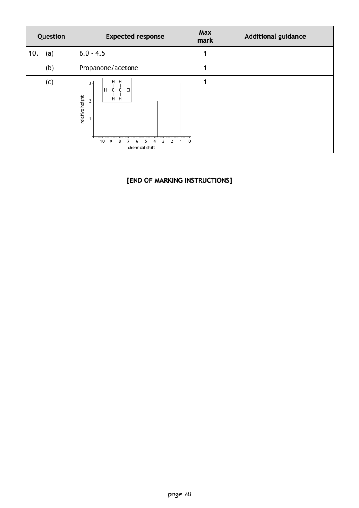
Selectable page text
Max
Question Expected response Additional guidance
mark
10. (a) 6.0 - 4.5 1
(b) Propanone/acetone 1
(c) 1
[END OF MARKING INSTRUCTIONS]
page 20